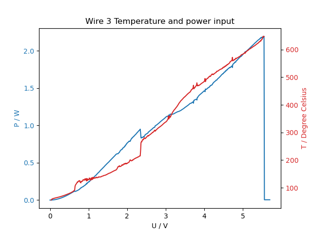

The aim of the laboratory session is to get the dependance between the resistance of a wire and its temperature, and analyze the results obtained.
In order to do that, several wires with different characteristics (material and diameter) were connected to a sourcemeter, and their IV curves were studied. The one with the most non-linear behaviour was chosen, which was an aluminum wire with the following specifications:
|
Diameter: 0.025 mm Purity: 99.9% Aluminum |
The wire was then put inside a climate chamber, to get the value of the resistance at different temperatures, R(T). From this relation, T(V) and P(V) were subsequently calculated. As a final step, the voltage applied to the wire was increased until it broke.
For these experiments, a Keithley 2636A Series Sourcemeter was used as a voltage supply, and also as a current measurement tool. To measure the wire under different temperatures a Vötsch VT4002 climate chamber was used. Also, the Four wire resistance measurement method was used to get a more accurate value of the resistance.
| Four wire measurement of the wire. The apparatus is made of copper to reduce its resistance. |
The plot below shows the temperature dependence of the resistance of the aluminium wire. A linear fit has been created to calculate linear dependence \[ \begin{equation} R(T) = R_0 + R_1T \end{equation} \]
| Figure 1: Temperature dependence of the resistance of the aluminium wire. Experimental values, theoretical values and linear fit calculated. |
The values for $R_0$ and $R_1$ are: \[ \begin{equation} R_0 = 1.634002 \, \Omega \quad R_1 = 0.019161 \, \Omega/\mathrm{K} \end{equation} \]
According to the following website, the Temperature Coefficient of Resistance for Aluminum is \[ \begin{equation} \alpha = 0.004308 \, \mathrm{K^{-1}} \end{equation} \] which has the same order of magnitude as the coefficient calculated from the linear fit: \[ \begin{equation} \alpha = 0.009499 \, \mathrm{K^{-1}} \end{equation} \] There is a factor 2 in between the experimental and the literature value though, which is also clearly visible in the plot.
From the R(T) relation, the temperature for a certain applied voltage, T(V), can be calculated using Ohms law. The plot below shows the result. The behaviour close to zero current is very unstable, which is expected as small changes cause a big change in Ohms law. \[ \begin{equation} R = \frac{U}{I} \end{equation} \]
| Figure 2: Almost linear part of the IV curve and temperature dependance with voltage. | |
Figure 2 shows the results for the nearly linear part of the IV curve. As the applied voltage increases, the behaviour changes. The results are shown in figure 3, as can be seen, the results are not as stable.
| Figure 3: IV curve for high voltages and temperature dependance with voltage. | |
The I-V-curve in fig.3 starts out smooth, and as the resistance increases due to higher temperature, the slope decreases. Then above 1.5V some cracks appear, and at 2.5V there is a characteristic drop in the current. This drop is reproducable, although it does not occur each time exactly at the same voltage (see fig.6, there it occurs at 2.4V). Since there is no phase change in aluminum before its melting point, we have no explanation for this behaviour.
Lastly, the dissipated power can be calculated, which is shown in figures 4 and 5. The power increases more steeply than the temperature, as can be expected from Stefan-Boltzmann-law, where the radiated power is proportional to $T^4$.
Fig. 5 shows a comparison of the experimental P(V) and the calculated dissipated power due to radiation and convection, assuming that the whole wire is at the temperature that corresponds to its resistance via the obtained R(T) relation (see simulation section for the used formulas).
The calculated power is about a factor 50 too low. This could be due to the real wire having a larger surface area than the assumed perfect cylinder, or it is not a valid approximation that the whole wire is at a uniform temperature, or the R(T) relation is wrong.
| Figure 4: Dissipated power and temperature dependance with voltage. | Figure 5: Electrical power and radiated power dependance with voltage. |
The last step of the laboratory session was to take the IV-curve of the wire for higher voltages, until it breaks. Figures 6 and 7 show the dependence between the current, the power and the temperature with the applied voltage.
|  | |
| Figure 6: IV curve and temperature dependance with voltage for high current. | Figure 7: Power and temperature dependance with voltage for high current. |
According to this experimental data, the wire broke at 2.2W and 647°C. The melting point of aluminum is 660°C, which is very close to the result obtained.
The calculated heat flow out of the wire by radiation and convection is about a factor 50 too low (see fig.5). To further investigate this difference, a simulation was written in python of a wire heated up by a current and dissipating heat by radiation, convection and heat transfer by phonons and electrons into the contacts, which were considered to be an infinite heat source.
For this, the wire is divided into $n$ wire pieces. The current $I$ is the same through every piece:
\[ \begin{equation}
I = \frac{U_{tot}}{R_{tot}}
\end{equation} \]
The voltage drop $U_i$ over wirepiece $i$ is
\[ \begin{equation}
U_i = U_{tot} \frac{R_i}{R_{tot}},
\end{equation} \]
with $R_i$ being resistance of piece $i$ at temperature $T_i$
\[ \begin{equation}
R_i = \frac{R_0 + R_1 (T_i-273)}{n}.
\end{equation} \]
For the resistance of the whole wire at temperature $T_i$, the experimental data $R_0$, $R_1$ described above was used.
So in every timestep $\Delta t$, every piece $i$ receives the electrical energy
\[ \begin{equation}
E_{i,in} = \Delta t \, \frac{U_{tot}^2 R_i}{R_{tot}^2}.
\end{equation} \]
According to Stefan-Boltzmann-law, the radiated energy per timestep and wirepiece is
\[ \begin{equation}
E_{i,rad} = \Delta t \, (T_i^4 - 293^4) * \sigma * \frac{A}{n} * \varepsilon_{wire}
\end{equation} \]
with the Stefan-Boltzmann-constant $\sigma$, the surface area of the whole wire $A$, and the emissivity of the wire $\varepsilon_{wire}$.
The term $T_i^4 - 293^4$ describes that every piece radiates energy according to its temperature, but also receives radiation from its surroundings, which are assumed to be at room temperature.
The emissivity of the aluminum wire largely depends on the thickness of its oxide layer, which is not known. So the emissivity was set to 0.9, which corresponds to anodized aluminum with a very thick oxide layer, as an upper boundary value.
The convected heat per timestep is given by
\[ \begin{equation}
E_{i,conv} = \Delta t \, (T_i-293) \alpha \frac{A}{n},
\end{equation} \]
assuming that the surrounding air is always at room temperature. The heat transfer coefficient for non-flowing air is $\alpha = 10 \, W m^{-2} K^{-1}$, according to literature (Wärmelehre: Technische Physik Band 3 von Horst Herr).
The heat transfer rate through a homogeneous solid is
\[ \begin{equation}
\frac{d}{dt} Q = \lambda \, (T_1 - T_2) \, \frac{area}{length}
\end{equation} \]
with the thermoconductivity $\lambda$, which generally is a function of temperature. For aluminum, these literature values were used to create a linear fit, resulting in the desired $\lambda_{Al}(T)$ function.
The energy flow per timestep from one wirepiece to the next was then approximated with
\[ \begin{equation}
E_{i \rightarrow i-1} = \Delta t \, \lambda(\frac{T_i+T_{i-1}}{2}) \, (T_i-T_{i-1}) \, r_{wire}^2\pi \, \frac{n}{l_{wire}}.
\end{equation} \]
The energy flowing into the outer pieces, which are fixed at T=293K because they are in direct contact with the copper clamps, is the outgoing heat current.
Then the temperature of each wirepiece is updated according to the total energyflow in and out of it and its heat capacity, and the next timestep is started.
For 1.5V, a stable state is reached after about 0.3 s, where the total incoming and outgoing energies match and the wire temperature does not change anymore.
Figure 8 shows the time evolution of incoming and outgoing power, and also the temperature distribution of the wire in the stable state. Interestingly, it reaches the melting point of aluminium (660 °C) already at 1.5V, and takes in much less power than the real wire (see fig.4). The reason for this may be in part due to the real wire not being a perfect cylinder, and having a higher surface area.
| Figure 8: Simulation of a wire with 1.5V applied. Left is the time evolution of in- and outflowing energies, right the temperature distribution of the wire in the steady state. | |
For 1.5V, the outflowing power in the steady state is
| $P_{radiated}$ | = | 0.097 W |
| $P_{convection}$ | = | 0.011 W |
| $P_{phonons,electrons}$ | = | 0.044 W |
| $P_{total}$ | = | 0.15 W |
The dissipated power of the wire in fig.5 does not match the inflowing electrical power. However, this figure only shows heat transfer by convection and radiation. To get an idea of how large the heat transfer by phonons and electrons into the copper clamps is, a simulation was written. The simulation is not meant to be exact, e.g. the emissivity of the wire is not known, but it provides a qualitative picture: Most of the power flowing out is clearly due to radiation.
However, it also shows that the temperture distribution of the wire cannot be assumed uniform. For the shown case (1.5V applied, fig.8) it is only about uniform in ~1/3 of its length (of course, it will be more uniform at higher voltages).
Also it was probably not uniform in the climate chamber, because the I-V-curve was taken after the desired temperature in the climate chamber was reached and remained constant for 60 sec. This is too short for the copper blocks to reach thermal equilibrium, so the ends of the wire were at a different temperature than the middle.
Another factor is contact resistance: When the wire broke by accident, we put another piece of wire in, and then the wire resistance had changed, which indicates a non-neglectable contact resistance.
So to get better results, we recommend
clean the contacts and maybe also the wire, with sandpaper and/or alcohol.
Take the I-V-curve of the wire in the climatechamber when the temperature was stable for a longer period (estimate it by a heat flow calculation and the copper block heat capacity).
Use a simulation like the one described above (or take an analytical solution for this problem) to take the temperature distribution of the wire into account when calculating the wire temperature and subsequently the power loss at different voltages.
Python code of the wire simultaion